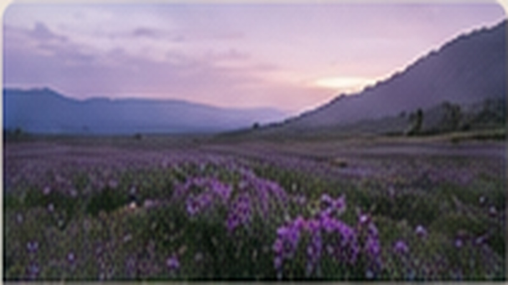
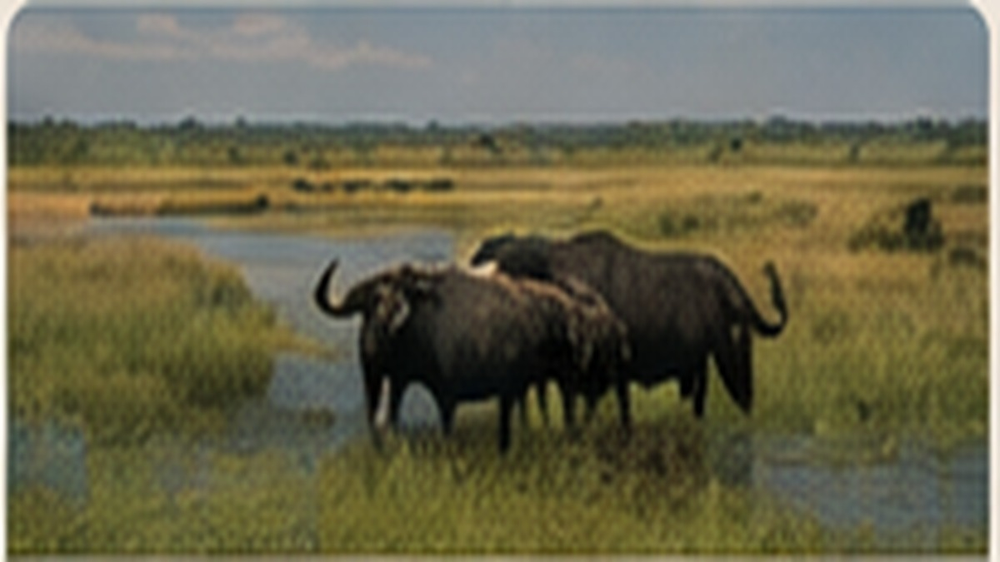

🐘
🐘
Ruaha National Park
Ruaha is ideal for travelers who want a true wilderness safari. Expect wide open landscapes, baobabs, elephants, lions, giraffes, wild dogs and excellent birding, with fewer vehicles in many areas than the better-known northern parks.
Tailor-made options:
Choose the travel style that suits you, from simple camping and practical stays to comfortable lodges or premium/luxury arrangements. We quote each safari according to accommodation, transport, season, group size and itinerary.
Suggested itinerary:
3 Days / 2 Nights
Day 1 – Arrive in the Ruaha area and enjoy an afternoon game drive as wildlife becomes active.
Day 2 – Spend a full day exploring different habitats, following wildlife and stopping for photography and birdwatching.
Day 3 – Enjoy a final morning game drive before departure.
 🦛
🦛
Nyerere National Park
Nyerere combines classic game viewing with the special character of the Rufiji River system. Guests can experience boat safaris for hippos, crocodiles and waterbirds, as well as land-based drives for elephants, giraffes, buffalo and predators.
Tailor-made options:
Choose the travel style that suits you, from simple camping and practical stays to comfortable lodges or premium/luxury arrangements. We quote each safari according to accommodation, transport, season, group size and itinerary.
Suggested itinerary:
3 Days / 2 Nights
Day 1 – Arrive and take an afternoon/evening boat safari on the river.
Day 2 – Full-day game drive through the park, with time for wildlife viewing and photography.
Day 3 – Morning activity, then depart for your next destination.
.jpg?width=1400) 🦁
🦁
Mikumi National Park
Mikumi is a practical choice for a shorter Southern Tanzania safari and can be reached more easily from Dar es Salaam than the more remote parks. The open Mkata floodplain offers good opportunities for elephants, giraffes, zebras, buffalo, lions and a wide range of birds.
Tailor-made options:
Choose the travel style that suits you, from simple camping and practical stays to comfortable lodges or premium/luxury arrangements. We quote each safari according to accommodation, transport, season, group size and itinerary.
Suggested itinerary:
2 Days / 1 Night
Day 1 – Travel to Mikumi, check in and head out for an afternoon game drive.
Day 2 – Early morning game drive when wildlife is active, followed by breakfast and departure.
 🌿
🌿
Udzungwa Mountains
Udzungwa is for travelers who want forest, hiking and nature rather than only traditional game drives. Walk through mountain forest to waterfalls and look for forest birds, primates and plants found in this distinctive part of Southern Tanzania.
Tailor-made options:
Choose the travel style that suits you, from simple camping and practical stays to comfortable lodges or premium/luxury arrangements. We quote each safari according to accommodation, transport, season, group size and itinerary.
Suggested itinerary:
2 Days / 1 Night
Day 1 – Arrive and settle in before a guided nature or forest experience.
Day 2 – Take a guided mountain walk, explore the forest and waterfalls, enjoy birdwatching, then depart.

🌸
Kitulo National Park
Kitulo is Tanzania’s highland flower country — a refreshing escape of open grasslands, seasonal wildflowers, mountain scenery and distinctive birdlife. It is especially rewarding for travellers who enjoy walking, photography, botany and peaceful landscapes away from busy game-drive routes.
Why guests choose it: Walk through flower-filled highlands, search for specialised birds, photograph dramatic mountain views and enjoy a cooler side of Tanzania that feels completely different from the classic savannah safari.
Tailor-made travel: The experience is tailored around the season, walking interests, birding goals and preferred comfort level, from practical stays to comfortable lodges or premium arrangements.
Suggested itinerary: 3 Days / 2 Nights
Day 1 – Arrival in the Highlands: Travel into the Kitulo highlands, settle into your selected accommodation and enjoy an introductory nature experience.
Day 2 – Kitulo Nature & Walking Experience: Spend a full day exploring the famous grasslands on foot, with time for seasonal wildflowers, mountain views, photography and birdwatching. The route can be adapted to your interests and fitness level.
Day 3 – Final Morning & Departure: Enjoy a final highland walk or birdwatching session before beginning your onward journey.
🐒
Gombe Stream National Park
Gombe is one of Tanzania’s most intimate wildlife experiences, where forest trails meet Lake Tanganyika. Famous for chimpanzee tracking, forest birdlife and beautiful lakeside scenery, it is ideal for guests who want an active and deeply personal nature experience.
Why guests choose it: Follow experienced guides through the forest in search of chimpanzees, learn about their behaviour and conservation, and combine the trek with birdwatching and time beside Lake Tanganyika.
Tailor-made travel: The journey can be tailored around chimpanzee tracking, walking time, photography, boat transfers and your preferred level of accommodation.
Suggested itinerary: 4 Days / 3 Nights
Day 1 – Arrival at Gombe: Travel to Gombe and settle into your accommodation beside Lake Tanganyika.
Day 2 – Chimpanzee Tracking: Enter the forest with experienced park guides in search of chimpanzees, following trails and observing their natural behaviour.
Day 3 – Forest & Lake Experience: Enjoy another guided forest experience, birdwatching or nature walk, with time for a lakeside or boat experience where arrangements allow.
Day 4 – Final Nature Experience & Departure: Enjoy a relaxed final morning before your onward transfer.

🦛
Katavi National Park
Katavi is for travellers seeking raw, remote Tanzania with very few other vehicles around. Vast floodplains, seasonal lakes, miombo woodland and the Katuma River create exceptional wildlife country, especially when animals gather around remaining water in the dry season.
Why guests choose it: Expect memorable encounters with buffalo herds, elephants, hippos, crocodiles, lions and abundant birdlife in a wilderness that feels far removed from crowded safari routes.
Tailor-made travel: Because Katavi is remote, we build the journey around the right season, transport, number of nights and preferred accommodation level, from practical to premium.
Suggested itinerary: 4 Days / 3 Nights
Day 1 – Arrival & First Game Drive: Enter Katavi, settle into your selected camp or lodge and begin with an introductory game drive.
Day 2 – Full-Day Katavi Safari: Explore floodplains, woodland and wildlife-rich areas in search of elephants, buffalo, hippos, giraffes, predators and abundant birdlife.
Day 3 – Sunrise & Afternoon Game Drives: Start early when wildlife is active, return for breakfast and relaxation, then continue with an afternoon safari.
Day 4 – Final Game Drive & Departure: Enjoy a final morning wildlife experience before departing Katavi.